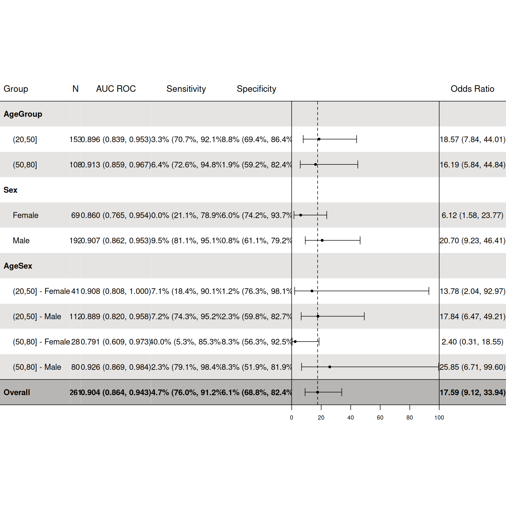
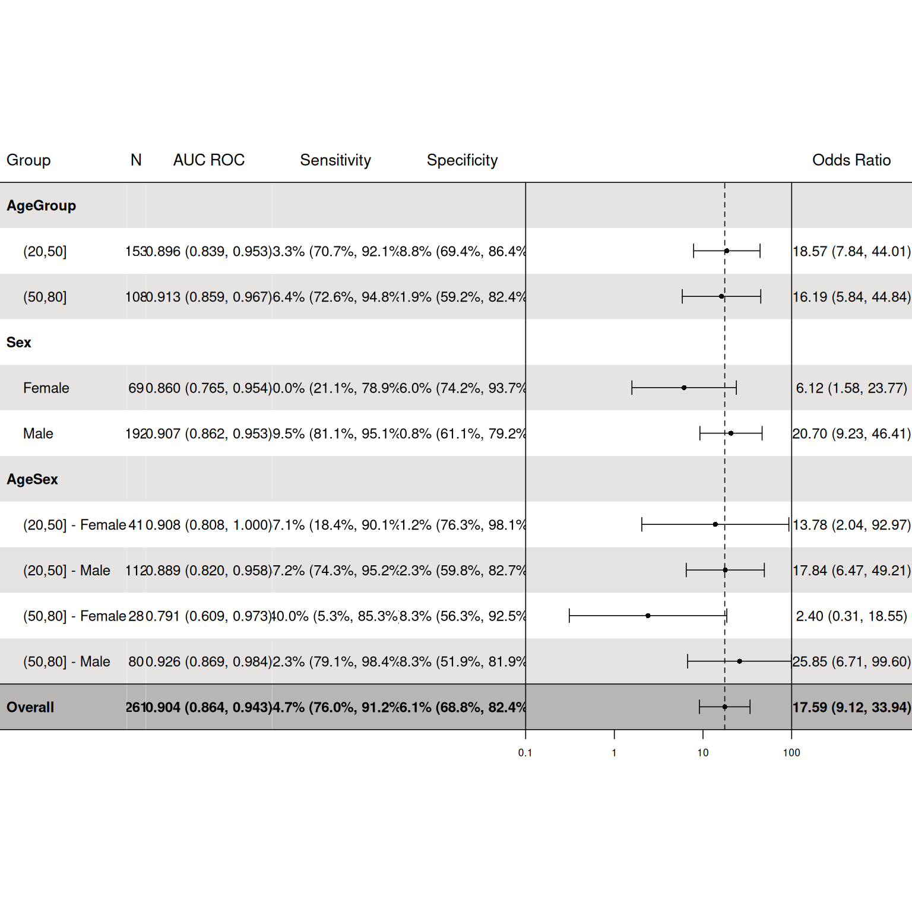

Generate a table of diagnostic measures
Usage
dx_plot_forest(
dx_obj,
fraction = FALSE,
breaks = NA,
limits = NA,
tick_label_size = 6.5,
trans = c(NA, "log10"),
measures = c("AUC ROC", "Sensitivity", "Specificity", "Odds Ratio"),
return = c("ggplot", "grid"),
filename = NA,
header_bg = "white",
header_col = "black",
body_bg = c("#e6e4e2", "#ffffff"),
footer_bg = "#b8b6b4",
footer_col = "black",
header_fontsize = 10,
body_fontsize = 9,
fraction_multiline = FALSE,
or_lwd = 0.8,
or_size = 0.35,
body_or_col = "black",
footer_or_col = footer_col
)Arguments
- dx_obj
An object of class dx
- fraction
Logical. Should the fraction for sensitivity and specificity be shown?
- breaks
A numeric vector of breaks to include on axis ticks. If left empty, breaks will be determined using the min and max value from 95% CIs.
- limits
Limits for axis ticks. Ticks will be generates using base::breaks. Ignored if breaks are passed.
- tick_label_size
Font size for axis labels.
- trans
Method to transform the odds ratio by. Currently, only log10 is supported.
- measures
Measures to be included in the plot
- return
Should a grid or ggplot object be returned?
- filename
File bane to create on disk. If left NA, no file will be created.
- header_bg
Background color of the header
- header_col
Color of text in the header
- body_bg
Background color of table rows. If values are less than total number of rows, values are repeated.
Background color if the footer row.
Color of the footer row.
- header_fontsize
Font size of header text
- body_fontsize
Font size of body text
- fraction_multiline
Logical. Should fractions be split onto 2 lines?
- or_lwd
Line width for OR
- or_size
Size of OR point
- body_or_col
Color of odds ratios in the table body
Color of odds ratios in the table footer
Examples
dx_obj <- dx(
data = dx_heart_failure,
true_varname = "truth",
pred_varname = "predicted",
outcome_label = "Heart Attack",
threshold_range = c(.1, .2, .3),
setthreshold = .3,
grouping_variables = c("AgeGroup", "Sex", "AgeSex")
)
dx_plot_forest(dx_obj)
#> Warning: number of columns of result, 7, is not a multiple of vector length 8 of arg 2

dx_plot_forest(dx_obj, trans = "log10")
#> Warning: number of columns of result, 7, is not a multiple of vector length 8 of arg 2
